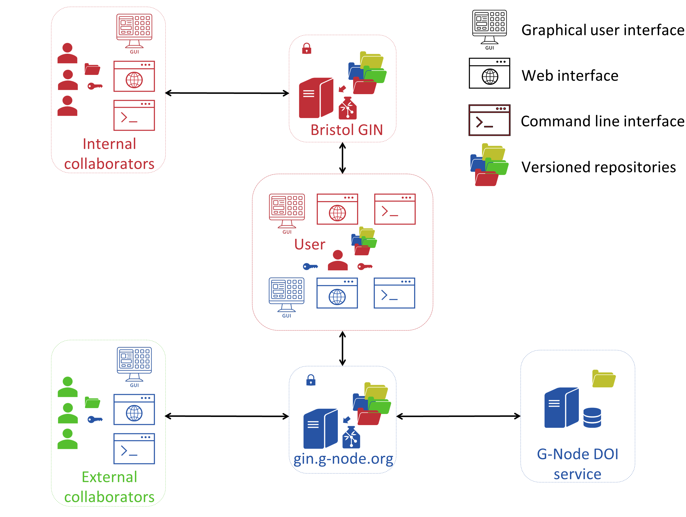
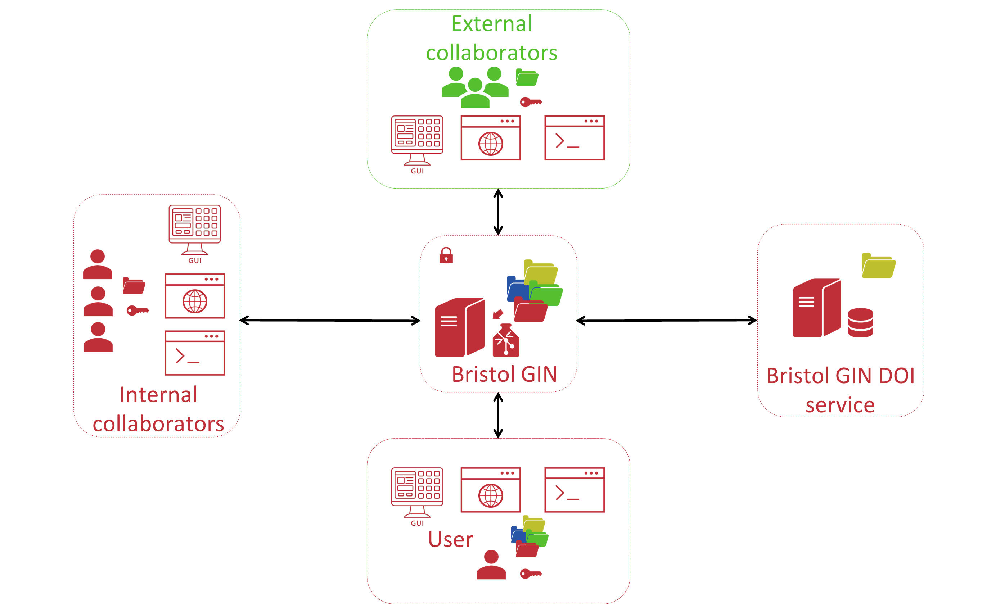
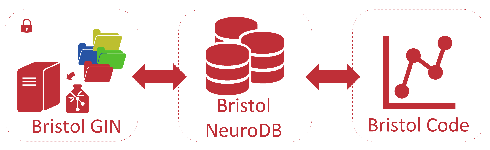

Welcome to Bristol Neuroscience Data Guide
Contents
Welcome to Bristol Neuroscience Data Guide#
Open access to data, often generated by multi-group collaborations with large datasets, is increasingly central to scientific endeavour because it conveys many benefits including research transparency, efficiency and collaboration. For all these reasons open access is becoming a requirement for many journals and grant funding bodies. Therefore, scientists need easy, cost effective and user-friendly ways to make data accessible to collaborators and the public. We have tested several data architecture systems for use with neuroscience datasets and selected GIN as the most flexible, easy to use and reliable system. We have adapted this for use within University of Bristol (UoB) IT systems and here describe Bristol GIN, a data sharing platform used by Bristol Neuroscience research teams with potential to be used by any science research discipline within and beyond UoB. Bristol GIN and the accompanying Bristol Neuroscience Data Guide are under development and scheduled to be launched in March of 2023. However, you can still browse this book while it is under development and submit any issues or comments you have on the Github issues page of this book.
Table of Contents#
Documentation
Tutorials
What is Bristol Neuroscience Data Guide?#
The Bristol Neuroscience Data Guide is a collection of tutorials and guidance documents describing the best neuroscience data management practices and principles used at UoB. It aims to improve neuroscience research culture by teaching you how to organise your research data so it is in line with the FAIR Guiding Principles for scientific data management and stewardship. FAIR stands for Findability, Accessibility, Interoperability, and Reusability of scientific data. The Guide aims to increase the findability and accessibility of your research data by encouraging you to store your research repositories on the Bristol GIN data sharing platform. The platform is designed to make scientific collaboration easier by facilitating selective data access for internal and external collaborators during the research phase and by allowing researchers to make their data available to public during the research output publication stage. The platform tracks repository modifications making sure that data history is preserved and version control is implemented through the entire evolution of the research project. Moreover, the Data Guide provides a list of tutorials explaining in a detailed step-by-step fashion how to create research data repositories, which folder organisation structures to adopt, how to record research metadata and provenance, and how to standardise your raw and derived research data so it is not only searchable but also interoperable and reusable by other researchers. In summary, the Bristol Neuroscience Data Guide seeks to increase scientific collaboration and effective use of Neuroscience data by teaching about open and transparent data management practices.
Why You Should Follow Practices Discussed in Bristol Neuroscience Data Guide#
We created the Bristol Neuroscience Data Guide, because we think it was going to be useful for both early and late career neuroscienctists. There is a great deal to learn about data management when a person is starting their scientific career. At this stage a lot can be learnt from supervisors and senior colleagues. However, many good practices may not be conveyed early on. This Data Guide should simplify this process and help the best data management practices to be adopted early on in one’s research career. Moreover, the data management practices are always evolving as the research culture changes and ever larger datasets are produced by individual neuroscience experiments. For these reasons, experienced researchers may also find this Data Guide useful.
More specifically, you should follow practices outlined by the Bristol Neuroscience Data Guide if:
You care about open and transparent neuroscience.
You care about efficient use of neuroscience data.
You care about aligning your research data management practices with the latest requirements espoused by research funding agencies and scientific journals. They are increasingly asking to conduct research in a highly ethical/transparent manner and make the results of publicly funded research open to the public.
You care about working with your data in a highly organised manner to minimise mistakes caused by poor data management.
You care about keeping track of your data history.
You want to access your data easily in the future because you documented it sufficiently and you stored it in a highly accessible manner.
You want your colleagues and the public to access your data easily in the future.
You care about making research collaboration effective by making your research data easily accessible to your collaborators while at the same time storing it securely.
You care about your research data visibility.
You care about learning transferable skills that are useful across many research fields now but especially so in the future.
You want to manage research projects effectively in the lab that you run.
What is GIN?#
GIN (G-Node Infrastructure) is a free and open web-based neuroscientific data management system developed by the German Neuroinformatics Node (G-Node) and supported by the Bernstein Network Computational Neuroscience (BNCN) and the International Neuroinformatics Coordinating Facility (INCF). It offers a public service in the form of a web-based research data repository that can be used to share research data with collaborators and/or share it with the scientific community during research output publication. GIN can also be installed locally (in-house-GIN) on a personal computer or on a local university server accessible via your institution’s intranet or even made accessible publicly via an internet domain name. GIN is based on the most popular free and open-source distributed version control system called Git developed to handle small files and Git-annex which is used when GIN handles large files. GIN closely resembles the popular programming code hosting service and version control system called Github and capitalises on its success in the software development field to bring a similar service to (neuroscience) research data management.
These are important features of GIN that together distinguishes it from other existing research data management systems/repositories:
GIN is free and open-source.
There are no restrictions on who can create a GIN account and what type of research data are allowed to be stored.
There is no repository size limit.
Research data is version-tracked and can be restored to any previous recorded states.
GIN is secure and accessible from any location with an internet acces whether it is your lab, office, home, or a conference. You can sync your data anytime and anywhere.
Repository access is fine-grained allowing to restrict public/private repository access to collaborators by granting different access privileges.
The distinction between local and remote repository copies to distinguish between personal and team repository copies, respectively.
Support for repository branching allowing the creation of varying stability and purpose repository branches.
GIN stores data efficiently by deduplicating it.
GIN is accessible via web, command line, and graphical user interfaces making it suitable to researchers with different levels (or none) of coding experience.
GIN provides its own digital object identifier (DOI) service making your public research data easily citeable.
GIN can either be used as an online web service or can be installed locally on your computer and used to manage repositories on your file system only.
It can also be installed on a server managed by your organisation and opened for external access via an internet domain name.
GIN can be developed and integrated with other research data management and analsysis tools.
What is Bristol GIN?#
Bristol GIN is our in-house GIN, so to speak. It is an identical data management system to the public GIN server but installed on a virtual machine running on a server that belongs to and is maintained by the UoB. It consists of the GIN web which is the front-end of the service through which you interact with the entire system (Figure 1). It has a small postgres database running on the server that it uses to catalogue repositories and it interacts with a modern distributed file storage system called Ceph as its backend where the actual research data repositories are stored. You can access Bristol GIN by typing https://bristol.ac.uk/bristolgin/ in your web browser on the computer that is located on the university campus.
{kind=link}
Figure 1. Bristol GIN Local Set-up
The full workflow of managing neuroscience research data repositories at UoB at present is outlined in the Figure 2.
{kind=link}
Figure 2. Working with Neuroscience Research Data Repositories at UoB
At the centre of this workflow you have a typical neuroscience researcher, most likely a PhD student or a postdoc, who records data in human or animal subjects using one or another data collection technique (e.g., functional magnetic resonance imaging or high density extracellular electrodes). Data is initially generated and stored on a local file system. Such data is typically mainly and often exclusively accessible by the researcher who generated it. Therefore, the next step requires placing the data on the local research data management system that we call Bristol GIN. The data that is placed on the Bristol GIN is organised into a repository that has its own internal folder structure. The researcher can upload data onto the Bristol GIN using either the web browser, command line tools, or a desktop app if using a Windows machine. During the repository creation or any later stage other researchers at UoB can be granted access to the repository. Access permissions can be adjusted depending on the needs of the research. For example, local collaborators may be given read-only access barring them from making any changes to the repository. Or they may be granted admin rights if they are principal investigators managing the project that a junior researcher is collecting data for, to give an example.
As you can see in the workflow scheme, only local teams have access to the Bristol GIN. Unfortunaltely, this is a limitation of the current project phase. If a reasearcher needs to work on a project with external collaborators who do not have an account managed by the IT Services at UoB, he or she can upload data onto the public GIN server (see the bottom part of the Figure 2). In this case the data management process is very similar to the one involving the Bristol GIN. A researcher can use the same interfaces to interact with the public GIN server. They can restrict access rights granted to collaborators the same way they do it on the Bristol GIN. A crucial difference is, however, the availability of the DOI service provided by the public GIN server. Researchers can make their repositories publicly accessible and assign a DOI to their repositories which can then be cited in publications presenting findings that were generated using those repositories.
Bristol GIN together with the documentation, tutorials, and resources provided in the Bristol Neuroscience Data Guide and the Bristol GIN user Slack channel form the prototype neuroscience data management system at UoB that will be fully functional in the Spring of 2023. Once the Bristol GIN is installed on a university server and IT Services open local access to it via an assigned domain name, neuroscience teams will be able to upload their research data onto this data sharing platform. The prototype data sharing platform is going to have a very limited storage capacity allocated on virtual servers, currently 5TB of space only. Therefore, it can only store research data of a few neuroscience labs. The prototype stage is intended to demonstrate the viability of such a system working on the university IT infrastructure.
Currently we are seeking to obtain funding for the further development of our data management system. The existing system can be quickly improved in a few important and useful ways. The storage capacity can be substantially increased allowing many more neuroscience labs to join the system. The system could also be opened up to external collaborators or whole external teams allowing them to manage their own research data repositories. Bristol GIN could also instantiate its own DOI service, completely replacing the need to use the public GIN server for any neuroscience data generated at UoB. As a result of these improvements, the neuroscience data management workflow at UoB could look like the scheme outlined in the Figure 3.
{kind=link}
Figure 3. Improved Future Version of Bristol GIN
The full implementation of GIN at UoB would greatly improve the way we work with the neuroscience research data and create a new potential for internal and cross-institutional collaboration. However, there also exists an untapped potential to greatly improve neuroscience research data utilisation. Further development of the current system could aim to tap into this potential and create a sophisticated database to rapidly query the data across multiple repositories and data recording sessions stored on the Bristol GIN based on any metadata or raw/derived data parameter (Figure 4). This database could be built on top of the Bristol GIN and use this service as a data version control system. It would create an impetus for even greater data standardisation and would increase the effectiveness of accessing and manipulating neuroscience research data. Furthermore, this would allow researchers to develop custom built data analysis tools integrated to work with the database that could be kept on the Bristol GIN and made accessible to the wider neuroscience community. Obtaining further funding to develop Bristol GIN would allow us to expand it in these important ways.
{kind=link}
Figure 4. The Ultimate Aim of the Bristol GIN Project
Why you Should Use Bristol GIN#
The full implementation of GIN at UoB would be a very useful research infrastructure development. GIN is not just another file management system but a critical tool offering a greatly improved way of working with neuroscience research data that would bring your data management practices in line with the FAIR Guiding Principles for scientific data management and stewardship. FAIR stands for Findability, Accessibility, Interoperability, and Reusability of scientific data. By storing data on the Bristol GIN and making it public during the publication process while following Bristol Neuroscience Data Guide to recording metadata you can ensure the adherence to the first two and the last principles. If you follow our instructions on data standardisation (e.g., Neurodata without Borders (NWB), and Brain Imaging Data Structure (BIDS)), you can also make your data interoperable. In addition to making your data FAIR, there are important other benefits of using GIN in general and Bristol GIN in particular:
Work with research data in a highly organised manner. We have provided documentation and tutorials for you to follow from day one, so your data annotation and organisation follows the best practices. This will make your data highly accessible to your collaborators, your colleague neuroscientists, and your future self.
Manage your research data: Upload, access, sync, and restore your data anytime and anywhere.
Version your research data. Whenever you upload or modify data on the GIN server, the data history is preserved and you can always roll back to any earlier version of your data.
Securely share your data with collaborators and public. You have a fine-grained control over who sees what and the kind of modifications they are allowed to make to your repositories. Your local and team (remote) repository copies are kept separate.
Cite your data. You have a DOI service at your disposal.
Manage your research projects. As a principal investigator, you can implement research repository management guidelines and have access and visibility of the content of repositories created by your research group.
Learn How to Use Bristol GIN#
Learning how to use GIN in general and Bristol GIN in particular is fairly easy. If you already use Git and Github (or any other version control and hosting service) to manage your computer code, you will learn to use GIN in no time. You can actually also use Git to manage your GIN repositories. If you are fairly new to version control, you should still be able to learn how to use GIN quickly. In order to learn the basics, it should not take you longer than a day: half a day to learn the web interface and half a day to learn the most needed terminal commands. The mastery will come with practice. We have provided you with tutorial examples to follow before you start using GIN to manage your own data. We have also prepared extensive documentation that you can consult at any time regarding any issue you experience while using Bristol GIN.
You may be reluctant to start using GIN because you are unsure about the benefits that this system provides and you may be sceptical whether you will get enough of them in exchange for the time and effort you put into learning this new skill. We have listed those benefits in the previous section. You may think that you can ensure that your data complies with the FAIR principles without the need to adopt GIN and you may be right. However, by the dint of version control, GIN can still increase the transparency of your research data. On the other hand, if you are in the middle of your project implementation, you may think that it is now too late to switch to GIN. It is never too late! You can start managing your existing repositories on GIN and still get benefits out of that: You can start tracking their history and you can make your data easier to access for yourself and your collaborators. Finally, think about your future self and the future of neuroscience. Neuroscience research and data it produces are moving in the direction of greater openness and transparency, so that the research reproducibility could be maximised. In the future, research data will be stored and managed by systems similar to GIN coupled with powerful databases and data analysis pipelines. You will do a favour to yourself and the larger neuroscience community if you learn the necessary skills to work with these future systems early on in your scientific career.